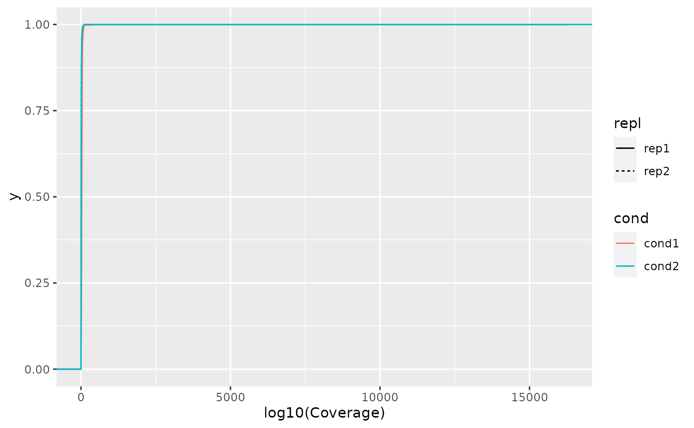

Introduction to JACUSA2helper
Michael Piechotta
2023-01-18
Source:vignettes/JACUSA2helper-intro.Rmd
JACUSA2helper-intro.Rmd
library(JACUSA2helper)
library(plyranges)
library(magrittr)A typical workflow for analyzing JACUSA2 output file(s) with JACUSA2helper consists of:
- Read JACUSA2 output file(s) into result object.
- Add optional data, e.g.:
base_sub()- add base substitution. - Filter result object by some criteria, e.g.:
dplyr::filter(All(cov$cond1 >= 10))- retain sites with read coverage >= 10, and useAll()orAnyon structured columns (conditions and replicates). - Plot filtered result object.
JACUSA2helper supports the analysis of the following methods from JACUSA2: call-{1,2}, pileup, rt-arrest, and lrt-arrest(experimental). Check the JACUSA2 manual for more details.
The main data structure is the result object that is implemented by following the tidy data approach from Wickham (2014) to feature easy interaction with dplyr and ggplot2.
In the following, we will focus on single pairwise comparisons of two
conditions of one output file. If you want to analyze multiple files
with similar pairwise comparisons, read
vignette("JACUSA2helper-meta-conditions").
Multi site and new features
While previously in JACUSA1, a site could be uniquely identified as one line in the output by the coordinate columns: ‘contig’, ‘start’, ‘end’, and ‘strand’, JACUSA2 features more complex data structures to store new features such as arrest positions of arrest events, variant tagging, and INDEL counts. Therefore, sites can now cover multiple lines of output - check Section “Introduction” of JACUSA2 manual for details.
Variant calling - Data: rdd (RNA-DNA-differences)
To introduce the basic verbs for manipulating JAUCSA2 output, we’ll
use JACUSA2helper:rdd. This data set contains a subset from
Piechotta et al. (2017) and is documented in
?rdd. In brief, the sample data set consists of 10.000
sites of 1x DNA and 2x stranded RNA sequencing libraries that allow to
define RNA-DNA-differences (RDDs).
library(JACUSA2helper)
data(rdd)Note that rdd is a tibble - check tibble for more details.
Use dplyr to manipulate the result object rdd. Check
details on dplyr and plyranges.
Structured column
JACUSA2 features structured columns (nested tibbles) where condition and replicate specific data is stored, e.g.: bases, cov, etc.
str(rdd[, c("bases", "cov")])
#> Formal class 'GRanges' [package "GenomicRanges"] with 7 slots
#> ..@ seqnames :Formal class 'Rle' [package "S4Vectors"] with 4 slots
#> .. .. ..@ values : Factor w/ 35 levels "GL000194.1","GL000195.1",..: 1 2 3 4 5 6 7 8 9 10 ...
#> .. .. ..@ lengths : int [1:35] 3 8 1 1 2 1 3 1 1 1 ...
#> .. .. ..@ elementMetadata: NULL
#> .. .. ..@ metadata : list()
#> ..@ ranges :Formal class 'IRanges' [package "IRanges"] with 6 slots
#> .. .. ..@ start : int [1:10018] 11097 70341 80493 138153 143152 149424 149551 165531 46563 84583 ...
#> .. .. ..@ width : int [1:10018] 1 1 1 1 1 1 1 1 1 1 ...
#> .. .. ..@ NAMES : NULL
#> .. .. ..@ elementType : chr "ANY"
#> .. .. ..@ elementMetadata: NULL
#> .. .. ..@ metadata : list()
#> ..@ strand :Formal class 'Rle' [package "S4Vectors"] with 4 slots
#> .. .. ..@ values : Factor w/ 3 levels "+","-","*": 2 1 2 1 2 1 2 1 2 1 ...
#> .. .. ..@ lengths : int [1:2868] 3 5 4 1 2 2 1 1 1 2 ...
#> .. .. ..@ elementMetadata: NULL
#> .. .. ..@ metadata : list()
#> ..@ seqinfo :Formal class 'Seqinfo' [package "GenomeInfoDb"] with 4 slots
#> .. .. ..@ seqnames : chr [1:35] "GL000194.1" "GL000195.1" "GL000214.1" "GL000216.1" ...
#> .. .. ..@ seqlengths : int [1:35] NA NA NA NA NA NA NA NA NA NA ...
#> .. .. ..@ is_circular: logi [1:35] NA NA NA NA NA NA ...
#> .. .. ..@ genome : chr [1:35] NA NA NA NA ...
#> ..@ elementMetadata:Formal class 'DFrame' [package "S4Vectors"] with 6 slots
#> .. .. ..@ rownames : NULL
#> .. .. ..@ nrows : int 10018
#> .. .. ..@ elementType : chr "ANY"
#> .. .. ..@ elementMetadata: NULL
#> .. .. ..@ metadata : list()
#> .. .. ..@ listData :List of 2
#> .. .. .. ..$ bases: tibble [10,018 × 2] (S3: tbl_df/tbl/data.frame)
#> .. .. .. .. ..$ cond1: tibble [10,018 × 1] (S3: tbl_df/tbl/data.frame)
#> .. .. .. .. .. ..$ rep1: tibble [10,018 × 4] (S3: tbl_df/tbl/data.frame)
#> .. .. .. .. .. .. ..$ A: num [1:10018] 0 0 0 0 0 0 0 0 0 0 ...
#> .. .. .. .. .. .. ..$ C: num [1:10018] 0 8 2 0 0 0 0 0 0 0 ...
#> .. .. .. .. .. .. ..$ G: num [1:10018] 5 0 0 2 8 2 0 2 0 0 ...
#> .. .. .. .. .. .. ..$ T: num [1:10018] 0 0 0 0 0 0 3 0 7 32 ...
#> .. .. .. .. ..$ cond2: tibble [10,018 × 2] (S3: tbl_df/tbl/data.frame)
#> .. .. .. .. .. ..$ rep1: tibble [10,018 × 4] (S3: tbl_df/tbl/data.frame)
#> .. .. .. .. .. .. ..$ A: num [1:10018] 9 0 6 3 6 4 0 2 0 0 ...
#> .. .. .. .. .. .. ..$ C: num [1:10018] 0 0 0 0 0 0 2 0 3 0 ...
#> .. .. .. .. .. .. ..$ G: num [1:10018] 1 0 0 12 11 5 0 3 0 1 ...
#> .. .. .. .. .. .. ..$ T: num [1:10018] 0 5 0 0 0 0 0 0 2 16 ...
#> .. .. .. .. .. ..$ rep2: tibble [10,018 × 4] (S3: tbl_df/tbl/data.frame)
#> .. .. .. .. .. .. ..$ A: num [1:10018] 5 0 4 2 5 2 0 1 0 0 ...
#> .. .. .. .. .. .. ..$ C: num [1:10018] 0 0 0 0 0 0 1 0 1 0 ...
#> .. .. .. .. .. .. ..$ G: num [1:10018] 0 0 0 13 17 3 0 8 0 1 ...
#> .. .. .. .. .. .. ..$ T: num [1:10018] 0 6 0 0 0 0 1 0 1 19 ...
#> .. .. .. ..$ cov : tibble [10,018 × 2] (S3: tbl_df/tbl/data.frame)
#> .. .. .. .. ..$ cond1: tibble [10,018 × 1] (S3: tbl_df/tbl/data.frame)
#> .. .. .. .. .. ..$ rep1: num [1:10018] 5 8 2 2 8 2 3 2 7 32 ...
#> .. .. .. .. ..$ cond2: tibble [10,018 × 2] (S3: tbl_df/tbl/data.frame)
#> .. .. .. .. .. ..$ rep1: num [1:10018] 10 5 6 15 17 9 2 5 5 17 ...
#> .. .. .. .. .. ..$ rep2: num [1:10018] 5 6 4 15 22 5 2 9 2 20 ...
#> ..@ elementType : chr "ANY"
#> ..@ metadata : list()
#> ..$ JACUSA2.type : chr "call-pileup"
#> ..$ JACUSA2.header: chr " JACUSA2 Version: 2.0.0 call-2 -a D,Y -c 2 -P2 RF_FIRSTSTRAND -p 4 -r untr_hek293_rdds.out gDNA-rdds.bam untr-1"| __truncated__Check structure of column with:
names(rdd$cov)
#> [1] "cond1" "cond2"To access specific coverage information for condition 2 use:
str(rdd$cov$cond2)
#> tibble [10,018 × 2] (S3: tbl_df/tbl/data.frame)
#> $ rep1: num [1:10018] 10 5 6 15 17 9 2 5 5 17 ...
#> $ rep2: num [1:10018] 5 6 4 15 22 5 2 9 2 20 ...In summary, all structured/nested columns hold: * data of a condition “condI” on the first level, and * data of a replicate “repJ” on the second level.
Coverage information for condition 2 and replicate 1 can be accessed with:
str(rdd$cov$cond2$rep1)
#> num [1:10018] 10 5 6 15 17 9 2 5 5 17 ...Wrapper for lapply() and mapply()
For accessing and manipulating structured columns there are JACUSA2
specific wrappers for lapply() and mapply(): *
lapply_cond(x, f) operates on condition data (list of
replicate data), * lapply_repl(x, f) operates on replicate
data of each condition, and * mapply_repl(f, ...) operates
on replicate data, takes multiple inputs.
To get the total coverage for each condition use:
lapply_cond(rdd$cov, rowSums)
#> # A tibble: 10,018 × 2
#> cond1 cond2
#> <dbl> <dbl>
#> 1 5 15
#> 2 8 11
#> 3 2 10
#> 4 2 30
#> # … with 10,014 more rowsThe following gives you the observed base calls:
base_calls <- lapply_repl(rdd$bases, base_call)
base_calls$cond2
#> # A tibble: 10,018 × 2
#> rep1 rep2
#> <chr> <chr>
#> 1 AG A
#> 2 T T
#> 3 A A
#> 4 AG AG
#> # … with 10,014 more rowsFiltering with dplyr::filter()
dplyr and %>% from magrittr allow to formulate
compact analysis pipelines.
In a first step, we will retain sites with score >= 2.
# before filtering
length(rdd)
#> [1] 10018
result <- dplyr::filter(rdd, score >= 2)
print("After filtering")
#> [1] "After filtering"
# after filtering
length(result)
#> [1] 1733In order to formulate complicate statements with
dplyr::filter() featuring arbitrary combinations of
conditions and/or replicates use the following convenience functions: *
All() and * Any().
The following statement retains sites where all replicates of condition 1 have coverage >= 50 and at least one replicate of condition 2 has 10 reads:
rdd %>%
dplyr::filter(All(cov$cond1 >= 50) & Any(cov$cond2 >= 10))
#> GRanges object with 782 ranges and 16 metadata columns:
#> seqnames ranges strand | name score info
#> <Rle> <IRanges> <Rle> | <character> <numeric> <character>
#> [1] GL000220.1 118145 + | call-2 4.616875 *
#> [2] GL000220.1 118232 + | call-2 1.139760 *
#> [3] MT 1090 + | call-2 0.998387 *
#> [4] MT 11046 + | call-2 0.687081 *
#> [5] MT 12832 + | call-2 0.680235 *
#> ... ... ... ... . ... ... ...
#> [778] 22 42032758 + | call-2 0.755940 *
#> [779] 22 42070810 - | call-2 0.871558 *
#> [780] 22 42959104 - | call-2 1.293616 *
#> [781] 22 43015144 - | call-2 0.865697 *
#> [782] 22 43023675 - | call-2 0.936470 *
#> filter ref bases
#> <character> <character> <tbl_df>
#> [1] D;Y C 0:101:0:...: 0:16:3:...: 0:20:4:...
#> [2] D T 0: 0:0:...: 0: 2:0:...: 0: 1:0:...
#> [3] D A 7586: 0:0:...:27: 0:1:...:28: 0:1:...
#> [4] D T 0: 0:0:...: 0: 0:1:...: 0: 0:1:...
#> [5] D A 8328: 0:0:...:83: 0:1:...:89: 0:1:...
#> ... ... ... ...
#> [778] D T 0:0:0:...: 1:0:0:...: 1:0:0:...
#> [779] D T 0:0:0:...: 1:0:0:...: 1:0:0:...
#> [780] * A 50:0:0:...:10:0:1:...: 2:0:1:...
#> [781] D A 58:0:0:...:47:0:1:...:44:0:1:...
#> [782] D T 0:0:0:...: 0:0:1:...: 0:0:1:...
#> cov seq reset1 reset2 resetP
#> <tbl_df> <character> <character> <character> <character>
#> [1] 101: 19: 24 <NA> <NA> <NA>
#> [2] 76:101:101 <NA> <NA> <NA>
#> [3] 7586: 28: 29 <NA> <NA> <NA>
#> [4] 16219: 85: 86 <NA> <NA> <NA>
#> [5] 8328: 84: 90 <NA> <NA> <NA>
#> ... ... ... ... ... ...
#> [778] 65:69:67 <NA> <NA> <NA>
#> [779] 50:46:45 <NA> <NA> <NA>
#> [780] 50:11: 3 <NA> <NA> <NA>
#> [781] 58:48:45 <NA> <NA> <NA>
#> [782] 51:38:34 <NA> <NA> <NA>
#> backtrack1 backtrack2 backtrackP ins del
#> <character> <character> <character> <tbl_df> <tbl_df>
#> [1] <NA> <NA> <NA> 0:0:0:0:0:0 0:0:0:0:0:0
#> [2] <NA> <NA> <NA> 0:0:0:0:0:0 0:0:0:0:0:0
#> [3] <NA> <NA> <NA> 0:0:0:0:0:0 0:0:0:0:0:0
#> [4] <NA> <NA> <NA> 0:0:0:0:0:0 0:0:0:0:0:0
#> [5] <NA> <NA> <NA> 0:0:0:0:0:0 0:0:0:0:0:0
#> ... ... ... ... ... ...
#> [778] <NA> <NA> <NA> 0:0:0:0:0:0 0:0:0:0:0:0
#> [779] <NA> <NA> <NA> 0:0:0:0:0:0 0:0:0:0:0:0
#> [780] <NA> <NA> <NA> 0:0:0:0:0:0 0:0:0:0:0:0
#> [781] <NA> <NA> <NA> 0:0:0:0:0:0 0:0:0:0:0:0
#> [782] <NA> <NA> <NA> 0:0:0:0:0:0 0:0:0:0:0:0
#> -------
#> seqinfo: 35 sequences from an unspecified genome; no seqlengthsIn the following, we will:
- remove sites with score < 2,
- retain sites with coverage >= 10 for all replicates,
- remove sites with > 2 observed bases (excluding reference base),
- apply a filter that retains only robust sites (RNA editing must be present in all/both replicates),
- Finally, we compute the base substitution (here RNA editing sites against FASTA reference) per replicate.
filtered <- rdd
filtered$bc <- lapply_cond(filtered$bases, function(b) { Reduce("+", b) } ) %>% Reduce("+", .) %>% base_count()
filtered <- filtered %>%
dplyr::filter(score >= 2) %>%
dplyr::filter(All(cov$cond1 >= 10) & All(cov$cond2 > 10)) %>%
dplyr::filter(bc <= 2) %>%
dplyr::filter(robust(bases))
# sum base call counts of condition / RNA replicates
rna_bases <- Reduce("+", filtered$bases$cond2)
# we don't need lapply_repl, because we don't operate on all replicate from all
# conditions - only condition 2 / RNA
ref2rna <- base_sub(rna_bases, filtered$ref)
table(ref2rna)
#> ref2rna
#> A->C A->G A->T C->A C->G C->T G->A G->C G->T T->A T->C T->G
#> 6 171 2 3 2 9 23 6 1 5 15 3Instead of using DNA information from the reference FASTA sequence via column “ref”, we could use the actual data from condition 1 / DNA.
Robust requires observations (here base calls) to be present in all replicates of at least condition.
cond1_ref <- base_call(filtered$bases$cond1$rep1)
dna2rna <- base_sub(rna_bases, filtered$ref)
table(dna2rna)
#> dna2rna
#> A->C A->G A->T C->A C->G C->T G->A G->C G->T T->A T->C T->G
#> 6 171 2 3 2 9 23 6 1 5 15 3Using different sources of DNA to describe RRDs via
ref2rna and dna2rna we can conclude that there
are no polymorphic positions in filtered because
ref2rna and dna2rna are identical.
Plot base substitutions
We can now plot the site specific distribution of base substitutions using ggplot2 with:
tidyr::tibble(base_sub = dna2rna) %>% # ggplot requires a data frame
ggplot2::ggplot(ggplot2::aes(x = base_sub, fill = base_sub)) +
ggplot2::geom_bar() +
ggplot2::xlab("Base substitution") +
ggplot2::theme(
legend.position = "none",
axis.text.x = ggplot2::element_text(angle = 90, vjust = 0.5, hjust=1)
)Plot coverage distribution
To compare the coverage distribution of each data sample, we create a
simple plot of the empirical coverage distribution, where we map
cond(ition) to colour and repl(icate) to
linetype.
gather_repl(result, "cov") %>%
ggplot2::ggplot(ggplot2::aes(x = value, colour = cond, linetype = repl)) +
ggplot2::stat_ecdf(geom = "step") +
ggplot2::xlab("Coverage") –> In order to improve the preliminary plot, we need to modify the following aspects:
- Merge legends,
- add descriptive plot labels (x = Coverage, y = Density),
- add descriptive data description - What is cond(ition) 1 and 2, and finally
- logarithmize cov(erage).
First, a data description is added to the result object:
result <- gather_repl(rdd, "cov") %>%
dplyr::mutate(
data_desc = dplyr::case_when(
cond == "cond1" ~ "DNA",
cond == "cond2" & repl == "rep1" ~ "RNA 1",
cond == "cond2" & repl == "rep2" ~ "RNA 2"
)
)Supplementary data limits and labels are
created to enable sleek legend by relating cond(ition) and repl(icate)
to data description. They will be mapped to colour and
linetype.
# grouping enables nice legends in plot
result$group <- do.call(interaction, result[c("cond", "repl")])
# relate group={cond(ition), repl(icat)}, and nice label
meta_desc <- dplyr::distinct(result, cond, repl, group, data_desc)
# map group values to nice labels (data_desc)
limits <- as.vector(meta_desc[["group"]])
labels <- meta_desc[["data_desc"]]Finally, we combine the previous snippets and arrive at the final plot:
name <- "Data description"
result %>%
ggplot2::ggplot(ggplot2::aes(x = value, colour = group, linetype = group)) +
# map values for cond to colour and use nice labels
ggplot2::scale_colour_manual(
name = name,
labels = labels,
limits = limits,
values = factor(meta_desc[["cond"]]) %>% as.integer()
) +
# map values for repl to colour and use nice labels
ggplot2::scale_linetype_manual(
name = name,
labels = labels,
limits = limits,
values = factor(meta_desc[["repl"]]) %>% as.integer()
) +
ggplot2::stat_ecdf(geom = "step") +
# theming and xy labels
ggplot2::ylab("Density") +
# logarithmize and nice x-axis
ggplot2::scale_x_log10(
breaks = scales::trans_breaks("log10", function(x) 10^x),
labels = scales::trans_format("log10", scales::math_format(10^.x))
) +
ggplot2::xlab("Coverage") +
ggplot2::theme(legend.position = "bottom") From the plot, we can deduce that RNA samples have similar coverage distribution and are higher covered than the DNA data sample. This code serves as a blueprint for other plots, e.g.:
- empirical cumulative distribution of arrest rate or
- number of observed bases.
Arrest events
In Zhou et al. (2018) the authors map RNA modification
of pseudouridine (\(\Psi\)) by
chemically modifying pseudouridines with carbodiimide (+CMC) and
detecting arrest events that are induced by reverse transcription stops
in high-throughput sequencing under 3 different conditions: HIVRT,
SIIIRTMn, and SIIIRTMg. The result of JACUSA2 are available by using
data(). Read JACUSA2
manual for details on how data has been processed from the original
publication by Zhou et al. (2018). In brief,
the data has been filtered to contain the following rRNAs: RNA18SN5,
RNA28SN5, and RNA5-8SN5.
In the following, we will be looking at the results for
data(HIVRT_rt_arrest). By default JACUSA2 output from
rt-arrest will contain the following structured/nested
columns:
-
arrestandthrough -
bases=arrest+through: total base counts. arrest_rate-
covholds coverage for total base counts.
data("HIVRT_rt_arrest")
HIVRT_rt_arrest$id <- JACUSA2helper::id(HIVRT_rt_arrest)
# column names of arrest data
names(GenomicRanges::mcols(HIVRT_rt_arrest))
#> [1] "name" "pvalue" "info" "filter" "ref"
#> [6] "arrest" "through" "bases" "arrest_rate" "cov"
#> [11] "seq" "arrest_score" "reset1" "reset2" "resetP"
#> [16] "backtrack1" "backtrack2" "backtrackP" "ins" "del"
#> [21] "id"We investigate the strand specific coverage distribution of reads and discover that more reads are mapped to the “+” strand. The other mappings are probably artefacts. But this discussion is beyond the scope of this vignette.
position <- dplyr::select(HIVRT_rt_arrest, id, seqnames, strand, .drop_ranges = TRUE) %>% dplyr::as_tibble()
coverage <- gather_repl(HIVRT_rt_arrest, "cov")
dplyr::inner_join(position, coverage, by = "id") %>%
ggplot2::ggplot(ggplot2::aes(x = value, colour = strand)) +
ggplot2::geom_density() + ggplot2::scale_x_log10(
breaks = scales::trans_breaks("log10", function(x) 10^x),
labels = scales::trans_format("log10", scales::math_format(10^.x))
) +
ggplot2::xlab("Coverage") +
ggplot2::theme(legend.position = "bottom") +
ggplot2::facet_grid(seqnames ~ .)We filter by pvalue, coverage, strand, and only retain robust arrest events:
length(HIVRT_rt_arrest)
#> [1] 12110
filtered <- HIVRT_rt_arrest %>%
dplyr::filter(strand == "+") %>%
dplyr::filter(pvalue <= 0.01) %>%
dplyr::filter(robust(arrest))
length(filtered)
#> [1] 1204We use gather_repl() function to transform the filtered
result object and plot the arrest rate from each condition in a scatter
plot.
df <- data.frame(
contig = seqnames(filtered),
arrest_rate1 = filtered$arrest_rate$cond1$rep1,
arrest_rate2 = filtered$arrest_rate$cond2$rep1
)
df %>%
ggplot2::ggplot(ggplot2::aes(x = log2(arrest_rate1), y = log2(arrest_rate2))) +
ggplot2::geom_point() +
ggplot2::facet_grid(. ~ contig) +
ggplot2::geom_abline(colour = "red") +
ggplot2::xlab("log2(+CMC arrest rate)") +
ggplot2::ylab("log2(-CMC arrest rate)")From the above plot, we can deduce that the arrest rate is higher in the +CMC condition for all rRNAs when compared against -CMC.
If you want to look simultaneously at all conditions (HIVRT,
SIIIRTMn, and SIIIRTMg), checkout
vignette("JACUSA2helper-meta-conditions").
Stranded data
When working with stranded RNA-Seq data, inverting base calls is not necessary because JACUSA2 will automatically invert Single End (SE) and Paired End (PE) depending on the provided library type option “-P” UNSTRANDED|FR_FIRSTSTRAND|RF_SECONDSTRAND”.
Input/Output
There are two functions to read JACUSA2 output
read_result(file) and
read_results(files, meta_conds) which is explained in
vignette("JACUSA2helper-meta-conditions").
Use result <- read_result("JACUSA2.out") to read and
create a JACUSA2 result object from a JACUSA2 output file
JACUSA2.out. By default, variables stored in the
info column will be processed and unpacked making them
available for further manipulation.
Summary of input/output methods:
-
read_result()Reads and unpacks a JACUSA2 result file and creates a result object. -
read_results()Allows to combine multiple result files and distinguish them with meta conditions. -
write_bedGraph()Writes a vector of values as bedGraph file.
General function layout
In the following the core functions of JACUSA2helper are presented.
Check the respective help page, e.g.: ?bc_ratio to get more
details.
arrest_rate Calculate arrest rate from arrest and
through reads. base_call Calculates observed bases from
base counts. base_ratio Calculates a ratio matrix from a
base count matrix. coverage Calculates coverage from base
counts. In most cases this will be called automatically in
read_result() non_ref_ratio Calculates non
reference base ratio for base counts of some base type.
base_sub Calculates base substitution from reference and
base counts, e.g.: A->G. sub_ratio Calculates base
substitution ratio from reference and observed bases, e.g.: 25%
A->G.
Filter result object
robust()filter_artefact()All(), Any()
Variant tagging
Variant tagging allows to group data based on base substitutions on
reads, called tags. Running JACUSA2 with -B "A2G" will tag
all reads that have a “A->G” base substitution. Where available, each
observations for each site (=contig, start, stop, strand) from tagged
and all reads will be provided and distinguished by “tag=A2G” or “tag=*”
in the info column, respectively. Use
result$tag <- clean_tag(result$tag) to convert base
substitutions such as “A2G” to “A->G”.